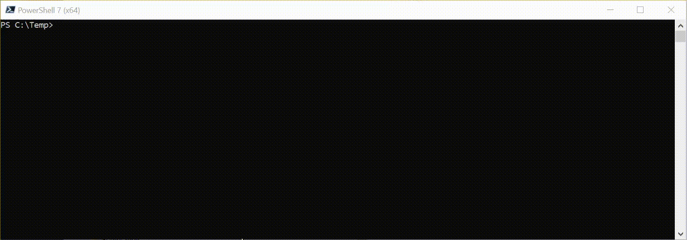

Dynamic Template Parameters
By utilising the PowerShell Dynamic Parameter system, it is possible to turn the parameters in the Parameters section of a CloudFormation template into command line arguments for the PSCloudFormation cmdlets that take a template (New-PSCFNStack, Update-PSCFNStack and Reset-PSCFNStack). This makes it much easier to pass in parameter values to the stack than with either the AWS.Tools cmdlets (where you have to give it an array of hashes), or the CLI (where you have to supply a list of key/value pairs.
With dynamic parameters you get command line completion for the names of parameters in the template, plus value completion for parameters with AllowedValues. All parameters are also type-checked before sending to AWS against AllowedPattern where specified, and also against Type where specified i.e. it won't let you pass a string when a number is expected. This includes validating against AWS specific types like AWS::EC2::VPC::Id etc.
Where a template parameter has no default, the PowerShell Mandatory attribute is applied to the generated parameter so PowerShell will prompt for any required parameters not present on the command line.
In Action
Consider the following template
AWSTemplateFormatVersion: '2010-09-09'
Description: Demo Stack
Parameters:
SSMParamValue:
Description: Value for ssm parameter
Type: String
AllowedValues:
- Hello
- World
Resources:
SSMParameter:
Type: AWS::SSM::Parameter
Properties:
Type: String
Value: !Ref SSMParamValue
Using Autocompletion
Note in this example how both the parameter name and the allowed values are autocompleted
Passing an Invalid Value
Here a value that is not one of the valid values is passed to the parameter. It is caught before the template is submitted to CloudFormation

Omitting a parameter with no default
If a required parameter is omitted, this is caught. Entering !? as directed for help prints the Description of the parameter from the template if present.
Update-PSCFNStack and Dynamic Argumments
When using Update-PSCFNStack you only need to supply values on the command line for stack parameters you wish to change. All remaining stack paramaeters will assume their previous values.
Piped Template Body and Dynamic Arguments
If you pass a template body to one of the cmdlets via the pipeline, it is not possible to use dynamic parameter arguments at all. The cmdlets will throw an exception saying that the cmdlet has no parameter of the given name. This is because at the time the dynamic parameter processing runs in the lifecycle of the cmdlet, the content of the template is not yet known, therefore the dynamic parameters cannot be built. You must in this case use a parameter file to define the template parameters (-ParameterFile)